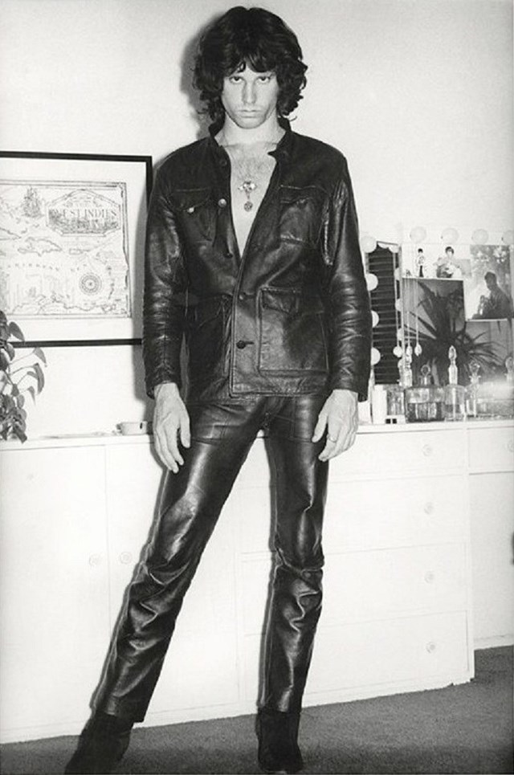

James Douglas Morrison (December 8, 1943 – July 3, 1971) was an
American singer, songwriter and poet, who served as the lead vocalist
of the rock band the Doors. Due to his poetic lyrics, distinctive
baritone voice, wild personality, unpredictable and erratic
performances, and the dramatic circumstances surrounding his life and
early death, Morrison is regarded by music critics and fans as one of
the most iconic and influential frontmen in rock history. Since his
death, his fame has endured as one of popular culture's most
rebellious and oft-displayed icons, representing the generation gap
and youth counterculture.
Together with Ray Manzarek, Morrison co-founded the Doors during the
summer of 1965 in Venice, California. The band spent two years in
obscurity until shooting to prominence with their number-one single in
the United States, "Light My Fire," taken from their self-titled debut
album. Morrison wrote or co-wrote many of the Doors' songs, including
"Light My Fire", "Break On Through (To the Other Side)", "The End",
"Moonlight Drive", "People Are Strange", "Hello, I Love You",
"Roadhouse Blues", "L.A. Woman", and "Riders on the Storm". He
recorded a total of six studio albums with the Doors, all of which
sold well and received critical acclaim. Though the Doors recorded two
more albums after Morrison died, his death severely affected the
band's fortunes, and they split up in 1973.
Morrison was also well known for improvising spoken word poetry
passages while the band played live. He died unexpectedly at the age
of 27 in Paris. As no autopsy was performed, the cause of Morrison's
death remains unknown.
“People are afraid of themselves, of their own reality; their feelings most of all. People talk about how great love is, but that’s bullshit. Love hurts. Feelings are disturbing. People are taught that pain is evil and dangerous. How can they deal with love if they’re afraid to feel? Pain is meant to wake us up. People try to hide their pain. But they’re wrong.”

A voracious reader from an early age, Morrison was particularly
inspired by the writings of several philosophers and poets. He was
influenced by Friedrich Nietzsche, whose views on aesthetics,
morality, and the Apollonian and Dionysian duality would appear in his
conversation, poetry and songs. Some of his formative influences were
Plutarch's Parallel Lives and the works of the French Symbolist poet
Arthur Rimbaud, whose style would later influence the form of
Morrison's short prose poems. He was also influenced by Celine,
Lawrence Ferlinghetti, Charles Baudelaire, Molière, Franz Kafka,
Albert Camus, Honoré de Balzac, along with most of the French
existentialist philosophers.
His senior year English teacher said, "Jim read as much and probably
more than any student in class, but everything he read was so offbeat
I had another teacher check to see if the books Jim was reporting on
actually existed. I suspected he was making them up, as they were
English books on sixteenth- and seventeenth-century demonology. I'd
never heard of them, but they existed, and I'm convinced from the
paper he wrote that he read them, and the Library of Congress would've
been the only source."
The Doors were an American rock band formed in Los Angeles in 1965, with vocalist Jim Morrison, keyboardist Ray Manzarek, guitarist Robby Krieger, and drummer John Densmore. They were among the most controversial and influential rock acts of the 1960s, mostly because of Morrison's lyrics and his erratic stage persona, and the group was widely regarded as representative of the era's counterculture. By 1972 the Doors had sold over 4 million albums domestically and nearly 8 million singles. The Doors were the first American band to accumulate eight consecutive gold LPs. According to the RIAA, they have sold 33 million records in the US and over 100 million records worldwide, making them one of the best-selling bands of all time.